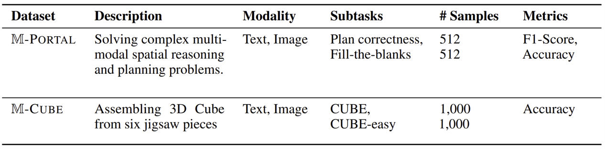
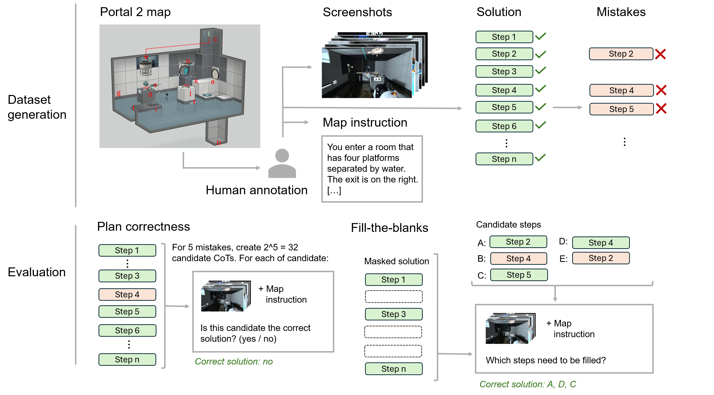
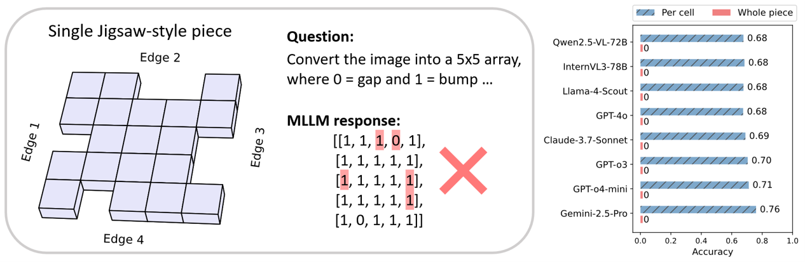

The ability to process information from multiple modalities and to reason through it step-by-step remains a critical challenge in advancing artificial intelligence. However, existing reasoning benchmarks focus on text-only reasoning, or employ multimodal questions that can be answered by directly retrieving information from a non-text modality. Thus, complex reasoning remains poorly understood in multimodal domains. Here, we present MARBLE, a challenging multimodal reasoning benchmark designed to scrutinize multimodal language models (MLLMs) in their ability to carefully reason step-by-step through complex multimodal problems and environments. MARBLE is composed of two highly challenging tasks, M-Portal and M-Cube, that require the crafting and understanding of multistep plans under spatial, visual, and physical constraints. We find that current MLLMs perform poorly on MARBLE—all the 12 advanced models obtain near-random performance on M-Portal and 0% accuracy on M-Cube. Only in simplified subtasks some models outperform the random baseline, indicating that complex reasoning is still a challenge for existing MLLMs. Moreover, we show that perception remains a bottleneck, where MLLMs occasionally fail to extract information from the visual inputs. By shedding a light on the limitations of MLLMs, we hope that MARBLE will spur the development of the next generation of models with the ability to reason and plan across many, multimodal reasoning steps.
MARBLE contains 2 datasets: M-Portal and M-CUBE. Each dataset also contains 2 subtasks, respectively.

The M-PORTAL dataset contains 1,024 visual question-answering tasks across 16 high-quality curated maps from the game Portal 2. Models are evaluated on two subtasks: verifying the correctness of full solution plans (Plan-correctness) and identifying missing steps in incomplete ones (Fill-the-blanks), each contributing to 512 problems.

On the plan correctness task, all investigated MLLMs performed very poorly with a minority class F1 score of around 6%, similar to the random baseline. On the easier fill-the-blanks task, most models outperform the random baseline. Still, even the best performing model, GPT-o3, manages to correctly solve only 17.6% of the problems.
| Model | Plan-correctness (F1 %) | Fill-the-blanks (Acc %) |
|---|---|---|
| GPT-o3 | 6.6 | 17.6 |
| Gemini-2.5-pro | 4.7 | 16.1 |
| DeepSeek-R1-0528* | 0.0 | 8.4 |
| Claude-3.7-Sonnet | 6.3 | 6.8 |
| DeepSeek-R1* | 6.1 | 5.5 |
| Seed1.5-VL | 7.6 | 3.5 |
| GPT-o4-mini | 0.0 | 3.1 |
| GPT-4o | 6.5 | 0.4 |
| Llama-4-Scout | 6.5 | 0.2 |
| Qwen2.5-VL-72B | 6.6 | 0.2 |
| InternVL3-78B | 6.4 | 0.0 |
| Qwen3-235B-A22B* | 0.0 | 0.0 |
| Random | 6.1 | 3e-3 |
M-CUBE is a 3D spatial-reasoning benchmark where the goal is to assemble six interlocking jigsaw pieces into a perfect cube. A model must assign every piece to a cube face with correct orientation, exploring a combinatorial search space. The dataset includes 1,000 CUBE examples at full difficulty and 1,000 CUBE-easy examples with simplified inputs and partial solutions.
Notably, all the advanced MLLMs completely fail on the harder subtask CUBE and obtain 0% accuracy. While on the simplified tasks CUBE-easy, most model score below 20% accuracy. Only GPT-o3 demonstrates reasonable performance of 72.0% accuracy.
| Model | CUBE (Acc %) | CUBE-easy (Acc %) |
|---|---|---|
| GPT-o3 | 0.0 | 72.0 |
| GPT-o4-mini | 0.0 | 16.0 |
| DeepSeek-R1* | 0.0 | 14.0 |
| Gemini-2.5-pro | 0.0 | 11.0 |
| DeepSeek-R1-0528* | 0.0 | 8.0 |
| Claude-3.7-Sonnet | 0.0 | 7.4 |
| InternVL3-78B | 0.0 | 2.8 |
| Seed1.5-VL | 0.0 | 2.0 |
| GPT-4o | 0.0 | 2.0 |
| Qwen2.5-VL-72B | 0.0 | 2.0 |
| Llama-4-Scout | 0.0 | 1.6 |
| Qwen3-235B-A22B* | 0.0 | 0.3 |
| Random | 1e-5 | 3.1 |
Additionally, we observe that even the advanced MLLMs struggle with a seemingly simple perception task: convert a jigsaw-style piece into a 5 × 5 array, posing a potential bottleneck for multimodal reasoning in complex scenarios like CUBE

@article{jiang2025marble,
title={MARBLE: A Hard Benchmark for Multimodal Spatial Reasoning and Planning},
author={Jiang, Yulun and Chai, Yekun and Brbi'c, Maria and Moor, Michael},
journal={arXiv preprint arXiv:},
year={2025},
url={https://arxiv.org/abs/}
}